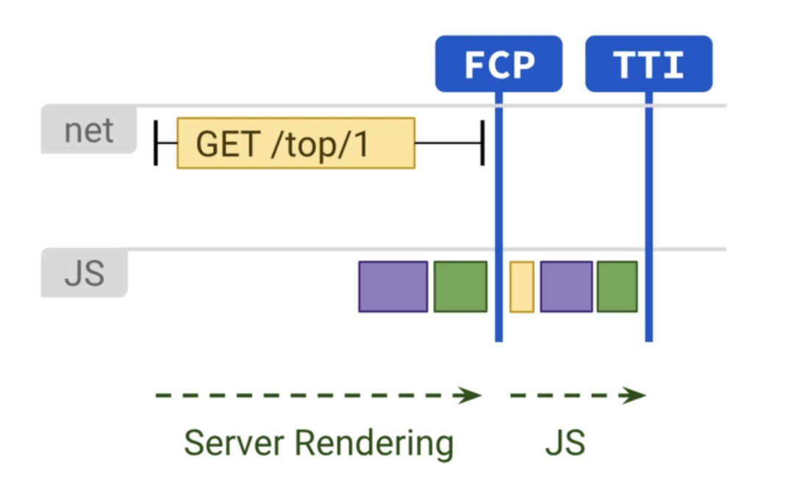
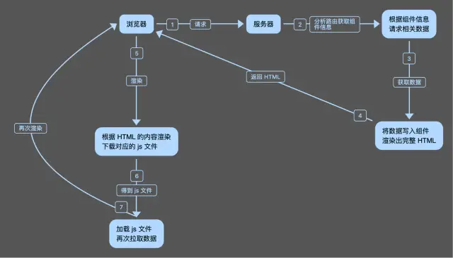
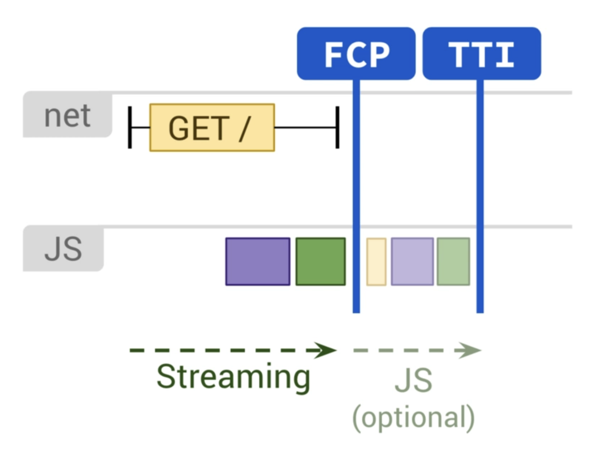
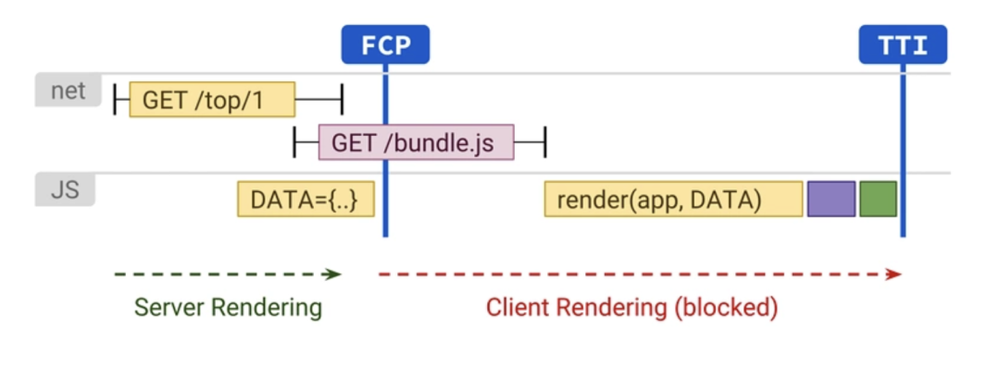
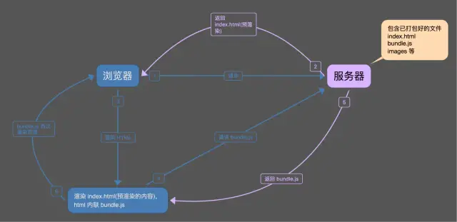
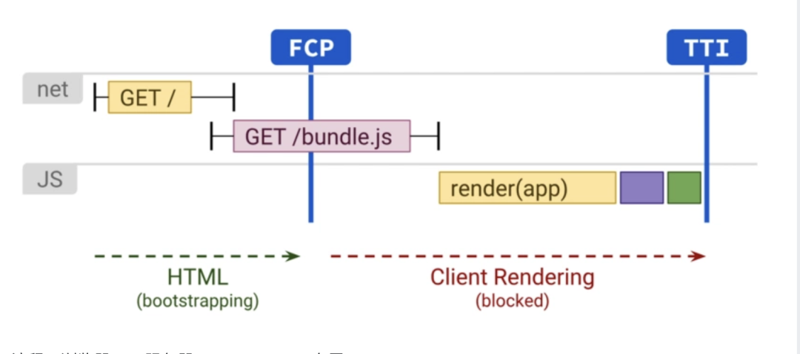
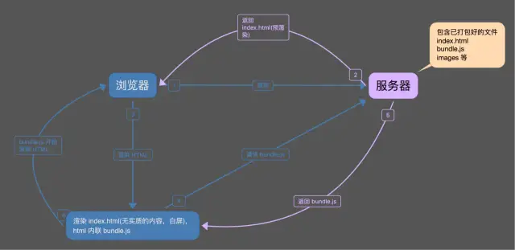
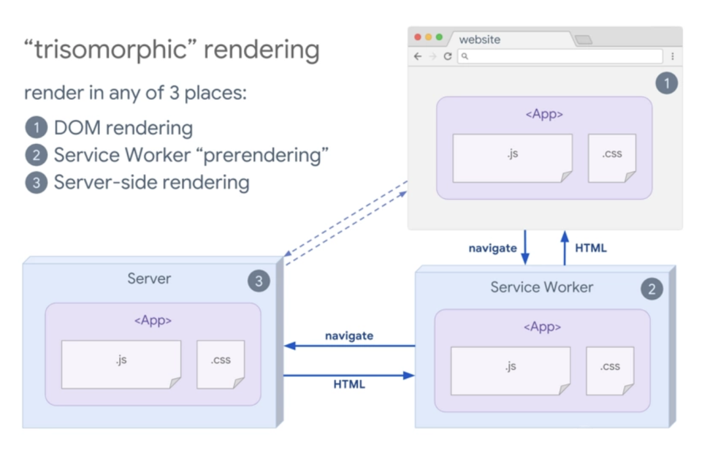
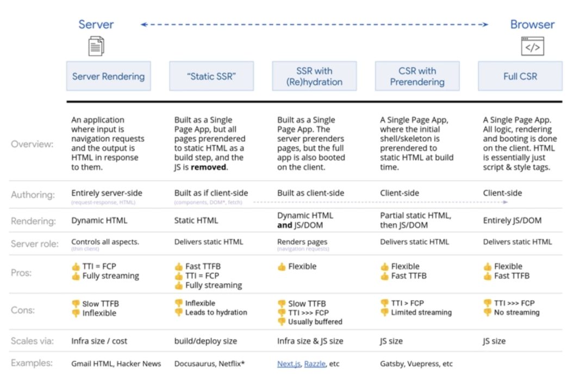

<!DOCTYPE html>


<html lang="zh-CN">


<head>
  <meta charset="utf-8" />
   
  <meta name="keywords" content="翟天野 天野 翟天野博客 tianye zhaitianye" />
   
  <meta name="description" content="The seeker of the world" />
  
  <meta name="viewport" content="width=device-width, initial-scale=1, maximum-scale=1" />
  <title>
    页面渲染六种的模式 |  Tianye Blog
  </title>
  <meta name="generator" content="hexo-theme-ayer">
  
  <link rel="shortcut icon" href="/favicon.ico" />
  
  
<link rel="stylesheet" href="/dist/main.css">

  
<link rel="stylesheet" href="/comm/remixicon.min.css">

  
<link rel="stylesheet" href="/css/custom.css">

  
  
<script src="/comm/pace.min.js"></script>

  
  

  

</head>

</html>

<body>
  <div id="app">
    
      
      <canvas width="1777" height="841"
        style="position: fixed; left: 0px; top: 0px; z-index: 99999; pointer-events: none;"></canvas>
      
    <main class="content on">
      <section class="outer">
  <article
  id="post-页面渲染六种的模式"
  class="article article-type-post"
  itemscope
  itemprop="blogPost"
  data-scroll-reveal
>
  <div class="article-inner">
    
    <header class="article-header">
       
<h1 class="article-title sea-center" style="border-left:0" itemprop="name">
  页面渲染六种的模式
</h1>
 

    </header>
     
    <div class="article-meta">
      <a href="/2019/12/%E9%A1%B5%E9%9D%A2%E6%B8%B2%E6%9F%93%E5%85%AD%E7%A7%8D%E7%9A%84%E6%A8%A1%E5%BC%8F/" class="article-date">
  <time datetime="2019-12-10T12:04:31.000Z" itemprop="datePublished">2019-12-10</time>
</a> 
  <div class="article-category">
    <a class="article-category-link" href="/categories/%E5%89%8D%E7%AB%AF%E6%96%B9%E5%90%91/">前端方向</a>
  </div>
  
<div class="word_count">
    <span class="post-time">
        <span class="post-meta-item-icon">
            <i class="ri-quill-pen-line"></i>
            <span class="post-meta-item-text"> 字数统计:</span>
            <span class="post-count">2.5k</span>
        </span>
    </span>

    <span class="post-time">
        &nbsp; | &nbsp;
        <span class="post-meta-item-icon">
            <i class="ri-book-open-line"></i>
            <span class="post-meta-item-text"> 阅读时长≈</span>
            <span class="post-count">8 分钟</span>
        </span>
    </span>
</div>
 
    </div>
      
    <div class="tocbot"></div>


  
    <div class="article-entry" itemprop="articleBody">
       
  <h2 id="现在的几种渲染模式"><a href="#现在的几种渲染模式" class="headerlink" title="现在的几种渲染模式"></a>现在的几种渲染模式</h2><ul>
<li>SSR (Server Side Rendering)</li>
<li>SSG (Static Site Generation)</li>
<li>SSR With hydration</li>
<li>CSR with Pre-rendering</li>
<li>CSR (Client Side Rendering)</li>
<li>Trisomorphic Rendering</li>
</ul>
<h2 id="SSR-Server-Side-Rendering"><a href="#SSR-Server-Side-Rendering" class="headerlink" title="SSR (Server Side Rendering)"></a>SSR (Server Side Rendering)</h2><p>SSR， 服务端渲染。</p>
<p>服务器呈现响应于导航为服务器上的页面生成完整的HTML。这样可以避免在客户端进行数据获取和模板化的其他往返过程，因为它是在浏览器获得响应之前进行处理的。</p>
<p>服务器渲染通常会产生快速的 First Paint （FP）和 First Contentful Paint （FCP）。</p>
<p>在服务器上运行页面逻辑和呈现可以避免向客户端发送大量JavaScript，这有助于实现快速的交互时间 （TTI）。</p>
<p>这是有道理的，因为使用服务器渲染，实际上只是将文本和链接发送到用户的浏览器。</p>
<p>这种方法可以在很大范围的设备和网络条件下很好地工作，并且可以带来有趣的浏览器优化，例如流文档解析。</p>
<p></p>
<center>影响FCP和TTI的服务器渲染和JS执行</center>

<p>流程：</p>
<p>浏览器 –&gt; 服务器 –&gt; 服务器执行渲染 –&gt; index.html(实时渲染的内容)) –&gt; Render –&gt; bundle.js + images –&gt; Render</p>
<p></p>
<center>SSR 流程</center>

<h3 id="优点"><a href="#优点" class="headerlink" title="优点"></a>优点</h3><ul>
<li><p>内容立即可用 -因为将HTML发送给客户端，所以几乎会立即看到页面内容。</p>
</li>
<li><p>无需获取其他客户端 -理想情况下，服务器呈现过程将进行所有必需的调用以获取数据，因此不会从客户端进行任何其他服务调用。</p>
</li>
</ul>
<p>非常适合SEO</p>
<h3 id="缺点"><a href="#缺点" class="headerlink" title="缺点"></a>缺点</h3><ul>
<li><p>服务器上的速度较慢 -需要渲染两次页面：一次在服务器上，一次在客户端上。同时也可能正在从服务器进行服务调用以呈现页面，所有这些都需要时间，因此可能会延迟HTML向客户端的初始发送。</p>
</li>
<li><p>与某些UI库不兼容 -如果你用的某些库使用了window，那你就要想办法来解决了。因为 Node 中没有window 或者 document。</p>
</li>
</ul>
<h2 id="SSG-Static-Site-Generation"><a href="#SSG-Static-Site-Generation" class="headerlink" title="SSG (Static Site Generation)"></a>SSG (Static Site Generation)</h2><p>SSG：静态网站生成。</p>
<p>静态网站生成类似于服务器端渲染，不同之处在于您在构建时而不是在请求时渲染页面。</p>
<p>与服务器渲染不同，由于不必动态生成页面的HTML，因此它还可以实现始终如一的快速到第一字节的时间。</p>
<p>通常，静态呈现意味着提前为每个URL生成单独的HTML文件。</p>
<p>借助预先生成的HTML响应，可以将静态渲染器部署到多个CDN，以利用边缘缓存的优势。</p>
<p></p>
<center>影响FCP和TTI的静态渲染和可选的JS执行</center>

<h3 id="优点-1"><a href="#优点-1" class="headerlink" title="优点"></a>优点</h3><ul>
<li><p>内容立即可用 -因为将HTML发送给客户端，所以几乎会立即看到页面内容。</p>
</li>
<li><p>无需获取其他客户端 -理想情况下，服务器呈现过程将进行所有必需的调用以获取数据，因此不会从客户端进行任何其他服务调用。</p>
</li>
<li><p>非常适合SEO</p>
</li>
<li><p>快-静态内容的呈现速度速度非常快。</p>
</li>
<li><p>没有服务器 -不必运行服务器。</p>
</li>
</ul>
<h3 id="缺点-1"><a href="#缺点-1" class="headerlink" title="缺点"></a>缺点</h3><ul>
<li><p>大型站点可能会很慢 -如果路由很多，速度可能会变慢。</p>
</li>
<li><p>与某些UI库不兼容 -如果你用的某些库使用了window，那你就要想办法来解决了。因为 Node 中没有window 或者 document。</p>
</li>
</ul>
<h2 id="SSR-With-hydration"><a href="#SSR-With-hydration" class="headerlink" title="SSR With hydration"></a>SSR With hydration</h2><p>hydration, 直译为水合。</p>
<p>简单点讲， 将功能放回到已经在服务器端中呈现的HTML中的整个过程，称为水合。</p>
<p>换句话说就是，对曾经渲染过的HTML进行重新渲染的过程称为水合。</p>
<p>此方法试图通过同时进行客户端渲染和服务器渲染，达到一种平衡。</p>
<p>导航请求（例如整页加载或重新加载）由服务器处理，该服务器将应用程序呈现为HTML，然后将JavaScript和用于呈现的数据嵌入到生成的文档中。</p>
<p>理想状态下，就可以像服务器渲染一样实现快速的First Contentful Paint，然后通过使用称为（re）hydration的技术在客户端上再次渲染来修补 。</p>
<p>这是一个新颖的解决方案，但是它也可能具有一些相当大的性能缺陷。</p>
<p>带水合的SSR的主要缺点是:</p>
<p>即使改进了First Paint，它也可能对可交互时间产生重大负面影响。</p>
<p>SSR的页面通常看起来具有欺骗性，并且具有交互性，但是在执行客户端JS并附加事件处理程序之前，实际上无法响应输入。</p>
<p>在移动设备上可能要花费几秒钟甚至几分钟。</p>
<p>原理示意：</p>
<p></p>
<center>影响FCP和TTI的静态渲染和可选的JS执行</center>

<p>与JS导致的延迟互动相比，这个模型造成的问题可能会更加严重：</p>
<p>服务器响应导航请求返回了应用程序UI的数据描述。同时，但它还返回了用于组成该UI的源数据以及该UI的实现的完整脚本，该脚本随后在客户端启动。</p>
<p>仅在bundle.js完成加载和执行后，该UI才会变为可交互。</p>
<p>一开始， 你会立即看到UI， 等bundle加载并执行完成之后， 页面才会更新， 进入可交互状态。</p>
<p>从真实网站中收集的效果指标表明， 使用SSR水合模式效果并不好，强烈建议不要使用它。</p>
<p>原因归结为用户体验：最终很容易使用户陷入怪异的山谷。</p>
<h2 id="CSR-with-Pre-rendering"><a href="#CSR-with-Pre-rendering" class="headerlink" title="CSR with Pre-rendering"></a>CSR with Pre-rendering</h2><p>Pre-render 原理是：在构建阶段就将html页面渲染完毕，不会进行二次渲染。</p>
<p>也就是说，当初打包时页面是怎么样，那么预渲染就是什么样。</p>
<p>等到JS下载并完成执行，如果页面上有数据更新，那么页面会再次渲染。这时会造成一种数据延迟的错觉。</p>
<p>Pre-render 利用 Chrome 官方出品的 Puppeteer 工具，对页面进行爬取。</p>
<p>它提供了一系列的 API, 可以在无 UI 的情况下调用 Chrome 的功能, 适用于爬虫、自动化处理等各种场景。</p>
<p>它很强大，所以很简单就能将运行时的 HTML 打包到文件中。</p>
<p>原理是：在 Webpack 构建阶段的最后，在本地启动一个 Puppeteer 的服务，访问配置了预渲染的路由，然后将 Puppeteer 中渲染的页面输出到 HTML 文件中，并建立路由对应的目录。</p>
<p>以此， 达到预渲染的目的。</p>
<p>流程：浏览器 –&gt; 服务器 –&gt; index.html(预渲染的内容) –&gt; Render –&gt; bundle.js + images –&gt; Render</p>
<p></p>
<center>Pre-Render 示意</center>

<h2 id="CSR-Client-Side-Rendering"><a href="#CSR-Client-Side-Rendering" class="headerlink" title="CSR (Client Side Rendering)"></a>CSR (Client Side Rendering)</h2><p>CSR, 顾名思义， 客户端渲染。</p>
<p>客户端渲染，意味着: 直接使用JavaScript在浏览器中渲染页面。</p>
<p>所有逻辑，数据获取，模板和路由均在客户端而不是服务器上处理。</p>
<p>CSR 示意图：</p>
<p></p>
<center>该图显示了影响FCP和TTI的客户端渲染</center>

<p>流程：浏览器 –&gt; 服务器 –&gt; index.html(白屏) –&gt; bundle.js –&gt; images –&gt; Render</p>
<p></p>
<center>CSR 示意</center>

<h3 id="优点-2"><a href="#优点-2" class="headerlink" title="优点"></a>优点</h3><ul>
<li>在服务器上快速 -因为仅呈现空白页，所以呈现速度非常快。</li>
<li>支持静态 -空白页可以通过S3之类的服务静态生成和提供，从而使速度更快。</li>
<li>支持单页应用程序 -客户端渲染是支持单页应用程序或SPA的模型。</li>
<li>成本相对较低 - CSR 相对于SSR/SSG， 更容易开发/维护。</li>
</ul>
<h3 id="缺点-2"><a href="#缺点-2" class="headerlink" title="缺点"></a>缺点</h3><ul>
<li>没有初始渲染 -如果应用很大，或者客户的连接速度很慢，加载时间过长，用户体验就不太好。</li>
</ul>
<h2 id="三态渲染"><a href="#三态渲染" class="headerlink" title="三态渲染"></a>三态渲染</h2><p>如果你可以结合Service-Worker, 则三态渲染模式也可能派上用场。</p>
<p>在三态渲染模型中，可以使用服务器流式渲染进行初始导航，然后让service worker 在 html加载完成后，继续进行导航html的渲染。</p>
<p>这样可以使缓存的组件和模板保持最新状态，并启用SPA样式的导航，以在同一会话中呈现新视图。</p>
<p>如果可以在服务器，客户端页面和service worker之间共享相同的模板和路由代码时，这种方法十分有效。</p>
<p>三态渲染模型：</p>
<p></p>
<center>三态渲染图，显示浏览器和服务程序与服务器进行通信</center>

<h2 id="服务端渲染-VS-客户端渲染"><a href="#服务端渲染-VS-客户端渲染" class="headerlink" title="服务端渲染 VS 客户端渲染"></a>服务端渲染 VS 客户端渲染</h2><p>服务器渲染会为每个URL按需生成HTML，比仅提供静态渲染内容要慢。</p>
<p>同时，也有一些优化空间：服务器渲染+ HTML缓存可以大大减少服务器渲染时间。</p>
<p>服务器渲染的优势在于：与静态渲染相比，它能够提取更多”实时”数据并响应更完整的请求集。</p>
<p>总结<br>从 SSR -&gt; CSR， 以及中间不同的渲染模式， 都在图里：</p>
<p></p>
<center>该图显示了本文介绍的各种选择</center>

<p>本文中介绍的6种渲染模式，至于如何选择， 这里也给出一些不成熟的建议：</p>
<ul>
<li><p>对seo要求不高，同时对操作需求比较多的项目，比如一些管理后台系统，建议使用 CSR。因为只有在执行完bundle之后， 页面才能交互，单纯能看到元素， 却不能交互， 意义不大， 而且SSR 会带来额外的开发和维护成本。</p>
</li>
<li><p>如果页面无数据，或者是纯静态页面，建议使用pre-render。因为这是一种通过预览打包的方式构建页面，也不会增加服务器负担。</p>
</li>
<li><p>对seo和加载速度有比较大需求的，同时页面数据请求多的情况，建议使用 SSR。</p>
</li>
</ul>
<p>参考资料</p>
<ul>
<li><a href="https://umijs.org/zh-CN/docs/ssr#umi-服务端渲染特性" target="_blank" rel="noopener">https://umijs.org/zh-CN/docs/ssr#umi-服务端渲染特性</a></li>
<li><a href="https://juejin.im/post/6844903971664953352#heading-6" target="_blank" rel="noopener">https://juejin.im/post/6844903971664953352#heading-6</a></li>
<li><a href="https://juejin.im/post/6844904097703788552" target="_blank" rel="noopener">https://juejin.im/post/6844904097703788552</a></li>
<li>微信公众号 - 前端瓶子君，前端e进阶等</li>
</ul>
 
      <!-- reward -->
      
    </div>
    

    <!-- copyright -->
    
    <div class="declare">
      <ul class="post-copyright">
        <li>
          <i class="ri-copyright-line"></i>
          <strong>版权声明： </strong>
          本博客所有文章，未经许可，任何单位及个人不得做营利性使用！如有侵权请联系作者。
        </li>
      </ul>
    </div>
    
    <footer class="article-footer">
       
  <ul class="article-tag-list" itemprop="keywords"><li class="article-tag-list-item"><a class="article-tag-list-link" href="/tags/%E5%89%8D%E7%AB%AF%E6%96%B9%E5%90%91/" rel="tag">前端方向</a></li></ul>

    </footer>
  </div>

   
  <nav class="article-nav">
    
      <a href="/2019/12/JetBrainsMono%20%E5%BC%80%E6%BA%90%E5%AD%97%E4%BD%93%E4%BD%BF%E7%94%A8/" class="article-nav-link">
        <strong class="article-nav-caption">上一篇</strong>
        <div class="article-nav-title">
          
            JetBrainsMono 开源字体使用
          
        </div>
      </a>
    
    
      <a href="/2019/11/vscode%E6%8F%92%E4%BB%B6-Todo%20Tree/" class="article-nav-link">
        <strong class="article-nav-caption">下一篇</strong>
        <div class="article-nav-title">vscode插件-Todo Tree</div>
      </a>
    
  </nav>

  
     
</article>

</section>
      <footer class="footer">
  <div class="outer">
    <ul>
      <li>
        Copyrights &copy;
        2015-2020
        <i class="ri-heart-fill heart_icon"></i> 翟天野
      </li>
    </ul>
    <ul>
      <li>
        
      </li>
    </ul>
    <ul>
      <li>
        
      </li>
    </ul>
    <ul>
      
    </ul>
    <ul>
      <li>
        <!-- cnzz统计 -->
        
      </li>
    </ul>
  </div>
</footer>
      <div class="float_btns">
        <div class="totop" id="totop">
  <i class="ri-arrow-up-line"></i>
</div>

<div class="todark" id="todark">
  <i class="ri-moon-line"></i>
</div>

      </div>
    </main>
    <aside class="sidebar on">
      <button class="navbar-toggle"></button>
<nav class="navbar">
  
  <div class="logo">
    <a href="/"></a>
  </div>
  
  <ul class="nav nav-main">
    
    <li class="nav-item">
      <a class="nav-item-link" href="/">主页</a>
    </li>
    
    <li class="nav-item">
      <a class="nav-item-link" href="/archives">归档</a>
    </li>
    
    <li class="nav-item">
      <a class="nav-item-link" href="/categories">分类</a>
    </li>
    
    <li class="nav-item">
      <a class="nav-item-link" href="/tags">标签</a>
    </li>
    
    <li class="nav-item">
      <a class="nav-item-link" href="/about">关于</a>
    </li>
    
  </ul>
</nav>
<nav class="navbar navbar-bottom">
  <ul class="nav">
    <li class="nav-item">
      
      
    </li>
  </ul>
</nav>
<div class="search-form-wrap">
  <div class="local-search local-search-plugin">
  <input type="search" id="local-search-input" class="local-search-input" placeholder="Search...">
  <div id="local-search-result" class="local-search-result"></div>
</div>
</div>
    </aside>
    <script>
      if (window.matchMedia("(max-width: 768px)").matches) {
        document.querySelector('.content').classList.remove('on');
        document.querySelector('.sidebar').classList.remove('on');
      }
    </script>
    <div id="mask"></div>

<!-- #reward -->
<div id="reward">
  <span class="close"><i class="ri-close-line"></i></span>
  <p class="reward-p"><i class="ri-cup-line"></i>请我喝杯咖啡吧~</p>
  <div class="reward-box">
    
    
  </div>
</div>
    
<script src="/js/jquery-2.0.3.min.js"></script>


<script src="/js/lazyload.min.js"></script>


<!-- Tocbot -->


<script src="/js/tocbot.min.js"></script>

<script>
  
  if(document.getElementsByClassName("tocbot").length !== 0){
    tocbot.init({
      tocSelector: '.tocbot',
      contentSelector: '.article-entry',
      headingSelector: 'h1, h2, h3, h4, h5, h6',
      hasInnerContainers: true,
      scrollSmooth: true,
      scrollContainer: 'main',
      positionFixedSelector: '.tocbot',
      positionFixedClass: 'is-position-fixed',
      fixedSidebarOffset: 'auto'
    });
  }
</script>

<script src="/comm/jquery.modal.min.js"></script>
<link rel="stylesheet" href="/comm/jquery.modal.min.css">
<script src="/comm/jquery.justifiedGallery.min.js"></script>

<script src="/dist/main.js"></script>

<!-- ImageViewer -->

<!-- Root element of PhotoSwipe. Must have class pswp. -->
<div class="pswp" tabindex="-1" role="dialog" aria-hidden="true">

    <!-- Background of PhotoSwipe. 
         It's a separate element as animating opacity is faster than rgba(). -->
    <div class="pswp__bg"></div>

    <!-- Slides wrapper with overflow:hidden. -->
    <div class="pswp__scroll-wrap">

        <!-- Container that holds slides. 
            PhotoSwipe keeps only 3 of them in the DOM to save memory.
            Don't modify these 3 pswp__item elements, data is added later on. -->
        <div class="pswp__container">
            <div class="pswp__item"></div>
            <div class="pswp__item"></div>
            <div class="pswp__item"></div>
        </div>

        <!-- Default (PhotoSwipeUI_Default) interface on top of sliding area. Can be changed. -->
        <div class="pswp__ui pswp__ui--hidden">

            <div class="pswp__top-bar">

                <!--  Controls are self-explanatory. Order can be changed. -->

                <div class="pswp__counter"></div>

                <button class="pswp__button pswp__button--close" title="Close (Esc)"></button>

                <button class="pswp__button pswp__button--share" style="display:none" title="Share"></button>

                <button class="pswp__button pswp__button--fs" title="Toggle fullscreen"></button>

                <button class="pswp__button pswp__button--zoom" title="Zoom in/out"></button>

                <!-- Preloader demo http://codepen.io/dimsemenov/pen/yyBWoR -->
                <!-- element will get class pswp__preloader--active when preloader is running -->
                <div class="pswp__preloader">
                    <div class="pswp__preloader__icn">
                        <div class="pswp__preloader__cut">
                            <div class="pswp__preloader__donut"></div>
                        </div>
                    </div>
                </div>
            </div>

            <div class="pswp__share-modal pswp__share-modal--hidden pswp__single-tap">
                <div class="pswp__share-tooltip"></div>
            </div>

            <button class="pswp__button pswp__button--arrow--left" title="Previous (arrow left)">
            </button>

            <button class="pswp__button pswp__button--arrow--right" title="Next (arrow right)">
            </button>

            <div class="pswp__caption">
                <div class="pswp__caption__center"></div>
            </div>

        </div>

    </div>

</div>

<link rel="stylesheet" href="/comm/photoswipe_dist/photoswipe.css">
<link rel="stylesheet" href="/comm/photoswipe_dist/default-skin/default-skin.css">
<script src="/comm/photoswipe_dist/photoswipe.min.js"></script>
<script src="/comm/photoswipe_dist/photoswipe-ui-default.min.js"></script>

<script>
    function viewer_init() {
        let pswpElement = document.querySelectorAll('.pswp')[0];
        let $imgArr = document.querySelectorAll(('.article-entry img:not(.reward-img)'))

        $imgArr.forEach(($em, i) => {
            $em.onclick = () => {
                // slider展开状态
                // todo: 这样不好，后面改成状态
                if (document.querySelector('.left-col.show')) return
                let items = []
                $imgArr.forEach(($em2, i2) => {
                    let img = $em2.getAttribute('data-idx', i2)
                    let src = $em2.getAttribute('data-target') || $em2.getAttribute('src')
                    let title = $em2.getAttribute('alt')
                    // 获得原图尺寸
                    const image = new Image()
                    image.src = src
                    items.push({
                        src: src,
                        w: image.width || $em2.width,
                        h: image.height || $em2.height,
                        title: title
                    })
                })
                var gallery = new PhotoSwipe(pswpElement, PhotoSwipeUI_Default, items, {
                    index: parseInt(i)
                });
                gallery.init()
            }
        })
    }
    viewer_init()
</script>

<!-- MathJax -->

<!-- Katex -->

<!-- busuanzi  -->

<!-- ClickLove -->

<!-- ClickBoom1 -->

<!-- ClickBoom2 -->


<script src="/js/clickBoom2.js"></script>


<!-- CodeCopy -->


<link rel="stylesheet" href="/css/clipboard.css">

<script src="/comm/clipboard.min.js"></script>
<script>
  function wait(callback, seconds) {
    var timelag = null;
    timelag = window.setTimeout(callback, seconds);
  }
  !function (e, t, a) {
    var initCopyCode = function(){
      var copyHtml = '';
      copyHtml += '<button class="btn-copy" data-clipboard-snippet="">';
      copyHtml += '<i class="ri-file-copy-2-line"></i><span>COPY</span>';
      copyHtml += '</button>';
      $(".highlight .code pre").before(copyHtml);
      $(".article pre code").before(copyHtml);
      var clipboard = new ClipboardJS('.btn-copy', {
        target: function(trigger) {
          return trigger.nextElementSibling;
        }
      });
      clipboard.on('success', function(e) {
        let $btn = $(e.trigger);
        $btn.addClass('copied');
        let $icon = $($btn.find('i'));
        $icon.removeClass('ri-file-copy-2-line');
        $icon.addClass('ri-checkbox-circle-line');
        let $span = $($btn.find('span'));
        $span[0].innerText = 'COPIED';
        
        wait(function () { // 等待两秒钟后恢复
          $icon.removeClass('ri-checkbox-circle-line');
          $icon.addClass('ri-file-copy-2-line');
          $span[0].innerText = 'COPY';
        }, 2000);
      });
      clipboard.on('error', function(e) {
        e.clearSelection();
        let $btn = $(e.trigger);
        $btn.addClass('copy-failed');
        let $icon = $($btn.find('i'));
        $icon.removeClass('ri-file-copy-2-line');
        $icon.addClass('ri-time-line');
        let $span = $($btn.find('span'));
        $span[0].innerText = 'COPY FAILED';
        
        wait(function () { // 等待两秒钟后恢复
          $icon.removeClass('ri-time-line');
          $icon.addClass('ri-file-copy-2-line');
          $span[0].innerText = 'COPY';
        }, 2000);
      });
    }
    initCopyCode();
  }(window, document);
</script>


<!-- CanvasBackground -->


    
  </div>
</body>

</html>